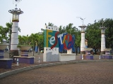

<div class="upage hidden black" id="ancol">
            <div class="upage-outer">
                <div class="uib-header header-bg container-group inner-element uib_w_256" data-uib="layout/header" data-ver="0">
                    <h2>Wisata Jakarta</h2>
                    <div class="widget-container wrapping-col single-centered"></div>
                    <div class="widget-container content-area horiz-area wrapping-col left"></div>
                    <div class="widget-container content-area horiz-area wrapping-col right">
                        <button class="btn widget uib_w_257 d-margins mustard btn-default" data-uib="twitter%20bootstrap/button" data-ver="1" id="backcol"><i class="glyphicon glyphicon-chevron-left" data-position="icon only"></i>
                        </button>
                    </div>
                </div>

                <div class="upage-content ac0 content-area vertical-col left" id="page_49_12"></div>
                <!-- tab -->
                <div class="container">
                    <h3>Taman Impian Jaya Ancol</h3>
                </div>

                <div id="exTab2" class="container">
                    <ul class="nav nav-tabs">
                        <li class="active">
                            <a href="#61" data-toggle="tab">Beranda</a>
                        </li>
                        <li><a href="#62" data-toggle="tab">Informasi</a>
                        </li>
                        <li><a href="#63" data-toggle="tab">Fasilitas</a>
                        </li>
                        <li><a href="#64" data-toggle="tab">Peta</a>
                        </li>
                        <li class="dropdown">
                            <a href="#" class="dropdown-toggle" data-toggle="dropdown" data-hover="dropdown"> Objek Wisata <b class="caret"></b></a>
                            <ul class="dropdown-menu">
                                <li><a href="#dropdown1" data-toggle="tab">Dunia Fantasi</a>
                                </li>
                                <li><a href="#dropdown2" data-toggle="tab">Sea World</a>
                                </li>
                                <li><a href="#dropdown3" data-toggle="tab">Atlantis Waterpark</a>
                                </li>
                                <li><a href="#dropdown4" data-toggle="tab">Gelanggang Samudra</a>
                                </li>
                            </ul>
                        </li>
                    </ul>
                    <div class="tab-content ">
                        <div class="tab-pane fade" id="dropdown1">
                            <h3>Dunia Fantasi</h3>
                            <p>Dunia Fantasi mempunyai maskot berupa kera bekantan yang diberi nama Dufan (singkatan dari Dunia Fantasi). Dipilih kera sebagai karakter adalah untuk mengingatkan bahwa Ancol dahulu adalah kawasan kera. Pemilihan kera bekantan
                                adalah semata-mata untuk mengenalkan jenis satwa langka yang kini dilindungi. Di area objek wisata Dufan, terdapat berbagai macam wahana bermain dengan sentuhan teknologi tinggi, baik untuk anak-anak maupun dewasa. Beberapa
                                wahana permainan bahkan benar-benar memacu adrenalin, sehingga membuat para peserta berteriak ketakutan. Dufan merupakan theme park pertama dan terbesar di Indonesia, dan telah mendapatkan ISO 9001:2008 sejak 2009.</p>
                            <br>
                            <h3 id="b29">Harga Tiket Masuk</h3>
                            <p class="box a29">Rp 200.000</p>

                            <h3 id="b30">Petunjuk Arah</h3>
                            <p class="box a30">
                                <iframe src="dufan.html" width="100%" height="700px" frameborder="80" style="border:0" allowfullscrene=""></iframe>
                            </p>

                        </div>

                        <div class="tab-pane fade" id="dropdown2">
                            <h3>Sea World</h3>
                            <p>Area Seaworld seluas 3 hektare dengan luas bangunan utama 4.500 m2 berisi berbagai macam akuarium, lorong Antasena (lorong bawah air), perpustakaan, museum, terapi ikan dokter, glow theatre, komputer edukatif layar sentuh berisi
                                informasi berbagai spesies di Seaworld dan bermacam fasilitas pelengkap untuk pengunjung seperti tempat makan, toko suvenir, dan ruang serba guna.</p>
                            <p>Akuarium utama memelihara ribuan satwa laut Indonesia. Sebanyak 35.500 ekor ikan laut Indonesia dari 35 spesies yang berbeda dipelihara disini. Ukuran akuarium ini mencapai 38 x 24 m dengan kedalaman yang bervariasi dari 4.5
                                hingga 6 m dan menyimpan 5 juta liter air laut. Karena besarnya akuarium utama ini tercatat sebagai akuarium air laut terbesar kedua di Asia Tenggara.</p>
                            <br>
                            <h3 id="b31">Harga Tiket Masuk</h3>
                            <p class="box a31">Rp 85.000</p>

                            <h3 id="b32">Petunjuk Arah</h3>
                            <p class="box a32">
                                <iframe src="sea.html" width="100%" height="700px" frameborder="80" style="border:0" allowfullscrene=""></iframe>
                            </p>
                        </div>

                        <div class="tab-pane fade" id="dropdown3">
                            <h3>Atlantis Waterpark</h3>
                            <p>Water park ini berdiri di atas lahan seluas lima hektar. Mulanya taman permainan air itu bernama Taman Rekreasi Air Gelanggang Renang Ancol. Setelah direvitaslisai, namanya berubah sesuai tema yang diusung yakni peradaban Yunani
                                yang hilang atau Atlantis. Atlantis Water Adventure memiliki delapan kolam utama. Seluruh kolam dinamai sesuai tokoh-tokoh yang kerap muncul dalam legenda Yunani yaitu Poseidon, Antila, Plaza Atlas, dan Aquarius. Ada pula
                                kolam yang disebut Octopus, Atlantean, dan Kiddy Pool.</p>
                            <p>Tempat wisata ini juga dilengkapi dengan kolam arus. Di wahana tersebut pengunjung bisa bersantai sambil menikmati seluruh pemandangan wahana water park tanpa harus lelah menjelajah. Anda cukup duduk di atas perahu karet yang
                                bergerak mengkuti di kolam yang mengelilingi taman permainan air.</p>
                            <br>
                            <h3 id="b33">Harga Tiket Masuk</h3>
                            <p class="box a33">Rp 95.000</p>

                            <h3 id="b34">Petunjuk Arah</h3>
                            <p class="box a34">
                                <iframe src="atlantis.html" width="100%" height="700px" frameborder="80" style="border:0" allowfullscrene=""></iframe>
                            </p>
                        </div>

                        <div class="tab-pane fade" id="dropdown4">
                            <h3>Gelanggang Samudra</h3>
                            <p>Gelanggang Samudra Ancol merupakan sebuah oseanarium atau oceanarium. Oseanarium merupakan taman mamalia laut dan mahluk laut lainnya. Selain menikmati rekreasi bersama keluarga, di sini Anda akan mendapatkan berbagai pengetahuan
                                yang menarik mengenai mamalia laut seperti lumba-lumba, paus, singa laut, dan binatang laut lainnya. Gelanggang Samudra Ancol juga menjadi sarana konservasi satwa laut.</p>
                            <p>Ada 4 wahana utama yang terdapat di Gelanggang Samudra, Ancol. Pertama, adalah wahana pertunjukan Aneka Satwa, wahana pertunjukan Singa Laut, wahana pertunjukan Lumba-Lumba dan Paus Putih, serta wahana Sinema 4D atau 4D Theatre.
                                Dalam 1 hari ada 3 kali pementasan untuk masing-masing wahana, atau di hari libur akan ditambahkan jumlah pementasan untuk setiap wahana. Agar tidak terlewat, Anda dapat melihat jam pertunjukan yang ada di depan wahana.
                                Setelah selesai menyaksikan satu pertunjukan, petugas akan menganjurkan Anda untuk menyaksikan perunjukan berikutnya. Bila Anda ingin menyaksikan semua pertunjukan, sebaiknya mengikuti petunjuk tersebut agar Anda tidak
                                tertinggal sehingga harus menunggu lebih lama.</p>
                            <br>
                            <h3 id="b35">Harga Tiket Masuk</h3>
                            <p class="box a35">Rp 95.000</p>

                            <h3 id="b36">Petunjuk Arah</h3>
                            <p class="box a36">
                                <iframe src="samudra.html" width="100%" height="700px" frameborder="80" style="border:0" allowfullscrene=""></iframe>
                            </p>

                        </div>

                        <div class="tab-pane active" id="61">
                            <h3>Deskripsi Taman Impian Jaya Ancol</h3>
                            <br>
                            <center>
                                
                            </center>

                            <p>Taman Impian Jaya Ancol i Jakarta Utara sering dijadikan destinasi wisata warga Jakarta dan sekitarnya yang ingin menikmati nuansa pantai. Tempat ini pun sering jadi pusat perayaan tahun baru tiap akhir tahun. Bahkan di hari
                                biasa, Taman Impian Jaya Ancol jadi primadona karena tempat ini menawarkan banyak wahana menarik. Kawasan Taman Impian Jaya Ancol sangatlah luas hingga mencapai 552 hektar serta begitu identik dengan suasana pantai.</p>

                            <div class="container">
                                <div id="myCarousel16" class="carousel slide" data-ride="carousel">
                                    <!-- Indicators -->
                                    <ol class="carousel-indicators">
                                        <li data-target="#myCarousel" data-slide-to="0" class="active"></li>
                                        <li data-target="#myCarousel" data-slide-to="1"></li>
                                        <li data-target="#myCarousel" data-slide-to="2"></li>
                                        <li data-target="#myCarousel" data-slide-to="3"></li>
                                        <li data-target="#myCarousel" data-slide-to="4"></li>
                                        <li data-target="#myCarousel" data-slide-to="5"></li>
                                        <li data-target="#myCarousel" data-slide-to="6"></li>
                                        <li data-target="#myCarousel" data-slide-to="7"></li>
                                        <li data-target="#myCarousel" data-slide-to="8"></li>
                                        <li data-target="#myCarousel" data-slide-to="9"></li>
                                        <li data-target="#myCarousel" data-slide-to="10"></li>
                                    </ol>

                                    <!-- Wrapper for slides-->
                                    <div class="carousel-inner" role="listbox">
                                        <div class="item active">
                                            
                                        </div>

                                        <div class="item">
                                            
                                        </div>

                                        <div class="item">
                                            
                                        </div>

                                        <div class="item">
                                            
                                        </div>

                                        <div class="item">
                                            
                                        </div>

                                        <div class="item">
                                            
                                        </div>

                                        <div class="item">
                                            
                                        </div>

                                        <div class="item">
                                            
                                        </div>

                                        <div class="item">
                                            
                                        </div>

                                    </div>

                                    <!-- Left and right controls -->
                                    <a class="left carousel-control" href="#myCarousel16" data-slide="prev">
                                        <span class="glyphicon glyphicon-chevron-left"></span>
                                        <span class="sr-only">Previous</span>
                                    </a>
                                    <a class="right carousel-control" href="#myCarousel16" data-slide="next">
                                        <span class="glyphicon glyphicon-chevron-right"></span>
                                        <span class="sr-only">Next</span>
                                    </a>
                                </div>
                            </div>

                            <!-- end slider -->

                        </div>

                        <div class="tab-pane" id="62">
                            <div class="container">
                                <div class="col-md-6 col-sm-6">

                                    <div class="panel-group wrap" id="accordion" role="tablist" aria-multiselectable="true">
                                        <div class="panel">
                                            <div class="panel-heading" role="tab" id="heading47">
                                                <h4 class="panel-title">
                                            
        <a role="button" data-toggle="collapse" data-parent="#accordion" href="#collapse47" aria-expanded="true" aria-controls="collapse47">
         Waktu Operasional
        </a>
      </h4>
                                            </div>
                                            <div id="collapse47" class="panel-collapse collapse in" role="tabpanel" aria-labelledby="heading47">
                                                <div class="panel-body">
                                                    <h4>Selasa - Minggu</h4>
                                                    <p>06.00 - 16.00 WIB</p>

                                                </div>
                                            </div>
                                        </div>
                                        <!-- end of panel-->

                                        <div class="panel">
                                            <div class="panel-heading" role="tab" id="heading48">
                                                <h4 class="panel-title">
        <a class="collapsed" role="button" data-toggle="collapse" data-parent="#accordion" href="#collapse49" aria-expanded="false" aria-controls="collapse49">
          Tiket Masuk
        </a>
      </h4>
                                            </div>
                                            <div id="collapse49" class="panel-collapse collapse" role="tabpanel" aria-labelledby="heading48">
                                                <div class="panel-body">
                                                    <!-- list info-->
                                                    <div class="list-group">

                                                        <a href="#" class="list-group-item list-group-item-info">

                                                            <h4>Anak - anak</h4>
                                                            <p>Rp 3.000</p>
                                                            <br>
                                                            <h4>Dewasa</h4>
                                                            <p>Rp 4.000</p>

                                                        </a>

                                                    </div>
                                                </div>
                                            </div>
                                        </div>
                                        <!-- end of panel -->

                                    </div>
                                    <!-- end of #accordion -->

                                </div>
                                <!-- end of wrap -->

                            </div>
                            <!-- end of container -->
                        </div>

                        <div class="tab-pane" id="63">
                            <h3>Fasilitas Umum</h3>
                            <br>
                            <!-- tab toilet ancol-->
                            <div class="container">
                                <h1></h1>
                            </div>
                            <div id="exTab1" class="container">
                                <ul class="nav nav-pills">
                                    <li class="active">
                                        <a href="#1p" data-toggle="tab">Toilet / Restroom</a>
                                    </li>
                                    <li><a href="#2p" data-toggle="tab">Tempat Ibadah</a>
                                    </li>

                                </ul>

                                <div class="tab-content clearfix">
                                    <div class="tab-pane active" id="1p">
                                        <h3></h3>
                                        <iframe src="toilet39.html" width="100%" height="700px" frameborder="80" style="border:0" allowfullscreen=""></iframe>
                                    </div>
                                    <div class="tab-pane" id="2p">
                                        <h3></h3>
                                        <iframe src="musola39.html" width="100%" height="700px" frameborder="80" style="border:0" allowfullscreen=""></iframe>
                                    </div>
                                </div>
                            </div>

                        </div>

                        <div class="tab-pane" id="64">
                            <h3>Petunjuk Arah Ancol</h3>
                            <br>
                            <iframe src="ancol.html" width="100%" height="700px" frameborder="80" style="border:0" allowfullscreen=""></iframe>
                        </div>
                    </div>
                </div>
            </div>
        </div>
        
        <!--end ancol -->